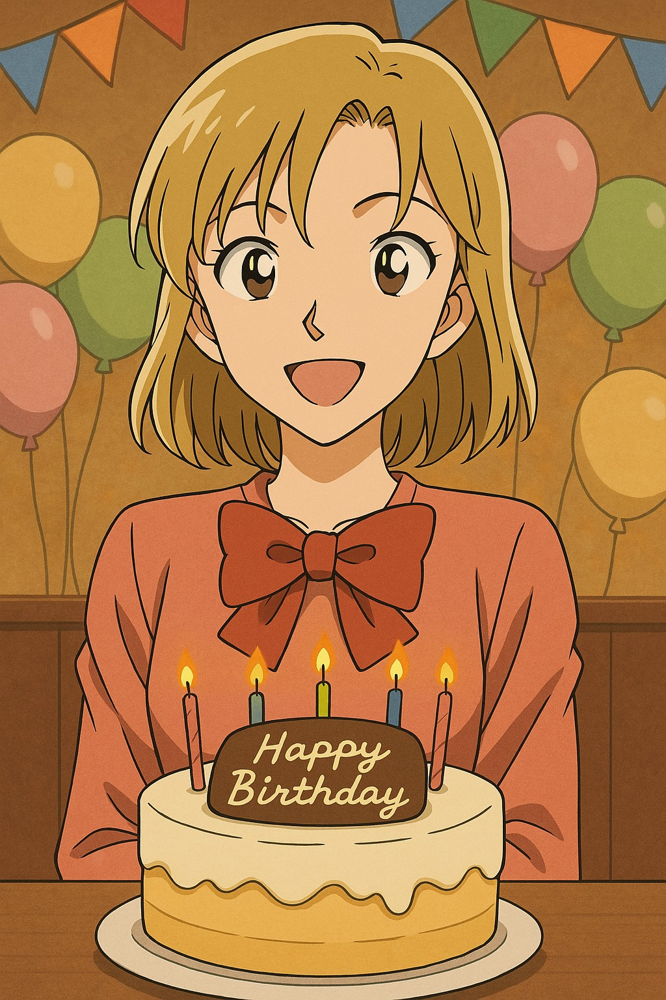

Bienvenue jeune détective. Une mission secrète t'attend aujourd’hui pour célébrer un anniversaire bien particulier. Prépare-toi à résoudre plusieurs énigmes…
🎮 Détective Conan – Enquête d'anniversaire
🔎 Énigme 1 – Message Chiffré
"Uifsf jt b tfdsfu nfttbhf ijeefo cz uif dboemfmjhiu"
Indice : Chaque lettre a été décalée d’un cran dans l’alphabet (code de César +1).
🔎 Énigme 2 – Moment mythique de Conan
Dans quel lieu emblématique Conan redevient temporairement Shinichi pour la première fois ?
Indice : Un endroit romantique sous la pluie à Tokyo. La...
🔎 Énigme 3 – Leur rencontre
Souviens-toi de nos débuts sur le serveur Discord...
Tu as répondu... ?
🔎 Énigme 4 – Devinette
Plus tu en as, moins tu vois.
Invisible, silencieux, je t’enveloppe sans bruit.
Qui suis-je ?

🎉 Joyeux anniversaire, détective en herbe ! 🎉
Aujourd’hui, je voulais marquer ce jour d’une touche de mystère, comme tu les aimes. Merci pour ta bienveillance, ton humour et ta présence. Longue vie, détective préféré. 🕵️♂️❤️
🕵️♂️ Affaire du Ruban Écarlate
Un meurtre a eu lieu lors d'une fête. Quatre suspects. Un seul coupable. Tu n'as droit qu'à deux essais pour accuser. Interroge-les d'abord !
Les suspects :
Indice général :
Le ruban écarlate du costume du coupable a été retrouvé taché de vin rouge. Mais… personne n’en portait officiellement.